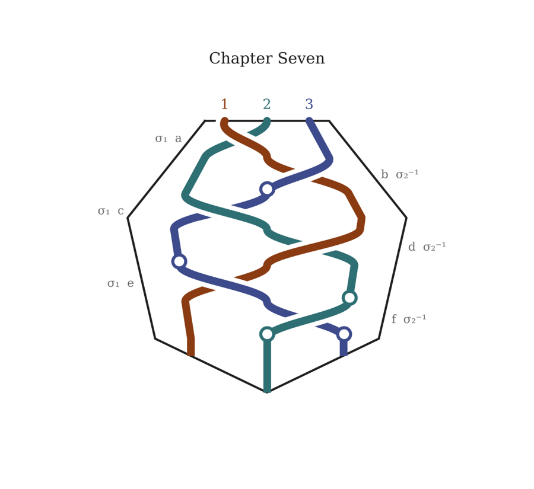

Chapter Seven
The Second Shock
F1R3GAMES · SAVE POINT
“Saved. Nine hours. Check what time it is where you are. I’ll wait.
“…
“Was it the time you thought? It usually isn’t. That’s rule ten, and I promised to remind you.
“You’ve been over the Hill now, and into the queen’s wood, and out again three days late. You’ve met me, in a manner of speaking, though I came in through a door and got burned for it, which I’d rather you didn’t dwell on. You know what happened in the bower. You know what was refused.
“The last part is the concert. I’ll tell you plainly: it is loud, and it is lit badly on purpose, and the thing you most want to see happens where you can’t see it. You’ll be tempted to read faster. Don’t. Read the way you’d listen to someone who was trying to tell you something true.
“You may still leave. I’d understand.”
Station 6 — The Second Shock
In which Holy Denying meets Holy Reconciling

a2 1 3
PLACEHOLDER — FOR A FRIEND
Where: New York. The hotel room above Amsterdam Avenue. Sunday night, after the return from Faerie and before Goro.
What it needs to do: Gyrl tells Boi how far down the rabbit hole xe went researching endogenous routes, “for a friend,” drawing on the research note. Boi recognizes “for a friend” at once and asks only practical questions about the friend. Gyrl’s two objections are one refusal: no lifelong dependency on someone else’s supply, and no removing a part of the body Gyrl experiences as a kind of brain. Gyrl reaches for the DMRT1 finding as an analogy and feels where it stops being enough. Then Gyrl stops saying “my friend.” Titania’s words in the bower — there is no boy here; you don’t have to hold it up anymore — are what made it sayable.
The pronoun: Gyrl has been trying Becky Chambers’s pronouns privately for a long time and claims them here. Narration uses them from this scene on. Which set (xe/xyr, as I believe Chambers uses, or ze/zer) is still to confirm.
Station: Station 5 — invocation meets fruition.
Note: keep the science at the level of the research note, and keep it unmistakably Gyrl’s own truth rather than the book’s verdict.
Meredith
They are to ascend to/assume the roles of V&B. Now that we have more developed a gaping plot hole is what is their relationship to the Fae? Do they become Fae? How is the transition that happens at the concert related to their transition? Indeed, should the Fae be included in the NHI contingent?
Claude
Boi and Gyrl don’t become Fae. Faerie becomes them. The book has always said the Fae are faerie stories, living by infecting minds and stealing time. On that premise “Victoria and Balthazar” are roles more than persons, and for a very long time their occupants have been Fae, feeding on the attention of everyone who reads them. The redemption is the moment those roles pass to humans who live them knowingly. You can’t steal time from yourself.
Victoria and Balthazar cross the other way, toward mortality. That is the Beelzebub’s Tales arc: the fallen one redeemed through time among humans, which makes him more human and so redeemable. It is also exactly what a braid crossing is: strands 2 and 3 exchange positions. The book’s form has been rehearsing its own ending. And under it is Tam Lin: a mortal held by the Fae, won back by someone who holds on through every transformation.
The Fae belong among the non-human intelligences as the eldest: the neighbors humanity has always known, but only through stories. That makes the machinery cohere. The empty chair at the seventh session was a non-human seat. The Slovenian clause governs exchange between realms, and the energy is time and attention. 10X is humanity’s oldest contact protocol, back to Göbekli Tepe. Different intelligences, different media: story, music, mathematics. The concert is the night they all open at once.
And the title does the work. Age of Consent names the end of an age of theft. For millennia Faerie took human time without asking; the concert is the night humanity is asked. Three nested crossings: a self, a pair, a species. Boi and Gyrl’s transition belongs to the concert because it cannot happen while Faerie still takes without asking.
The boldest option: the book has had a non-human intelligence in it from the first page, the AI in strand 1, talking with a human about what the story should become.
JERSEY CITY. A KITCHEN ON SIP AVENUE. TUESDAY, 7:10 AM.
The cast itched worst in the mornings.
She had learned to make breakfast one-handed in the first week, because Nell had to be at school by eight-fifteen and the cast did not care: eggs cracked against the edge of the bowl with the left hand, bread into the toaster, the juice carton held between her knees to open it. Nell thought this was hilarious. Nell was five and found most things hilarious, including, at the moment, the word Tuesday, which she said at intervals in different voices from her chair at the end of the table while she waited for her eggs.
Mr. Hops sat on the chair beside her with his ears flat. They had stayed flat since Thursday. He had spent too many hours wedged in a car seat against a window. He had a mended seam on one side where something had torn when he went onto the floor of the car on Thursday night, somewhere on the Belt Parkway, at the moment when the two men in the back seat had both turned around at once and started shouting, and the back seat between them had been empty.
She did not think about that. She thought about eggs.
She had been told the wrist would take six weeks. She had been told this by a doctor in an emergency room in Newark at two in the morning, a tired young man who had looked at the X-ray and then at her and then, carefully, not at her, and had said that car doors could do this, if they were shut hard enough, and had asked her whether she felt safe at home. She had said yes. It was true. She did not feel safe anywhere else.
It had been the week before Columbia. A diner on Route 1, the handler in the booth across from her with his coffee and his voice that never rose. A contingency, he had said. If the pair looked like closing, they might need to be separated for a while. Gently. Somebody careful. She had said she would not take somebody’s kid off a street. She had a kid. He had said that he knew. Then he had paid for the coffee and wished her a good evening, and in the garage under her building two men she had never seen before had been waiting by her car, and one of them had held the driver’s door open for her, politely, and then shut it.
On the floor of the garage, with her arm against her chest and the world gone white, she had heard the other one say, quite kindly: “You’ve got Nell at three on Thursdays, haven’t you? The pickup at the side gate.”
So she had done it. She had been careful. She had been early. She had told the men in the back not to hurt anyone and they had not hurt anyone, and somewhere on the Belt Parkway the person they had taken had stopped being in the car, and nobody had opened a door.
She had not been to the Hill since. She was not sure she would be let back.
The toaster went. She buttered the toast one-handed and cut it into the triangles Nell would accept and no other shape, and put the plate down, and Nell said “Tuesday” in a deep voice like a bear, and then picked up her spoon and began, absently, to tap on the edge of the table.
She was at the sink with her back turned when she heard it, and the plate she was rinsing slipped out of her good hand into the water.
Tap tap tap, with the spoon. And under it, with the flat of the other hand on the table, a different count. Three against two. The spoon falling into the gaps the hand left, the hand landing where the spoon had just been, the two of them going toward each other and not meeting and not missing, around and around.
She knew it. She had sat in a car for three hours and forty minutes on Van Brunt Street listening to it come up out of a grate in the sidewalk. A cello first, and then strings, tapped, and under them a pulse that didn’t sound like any drum. She had heard the two sounds go toward each other and felt the hair on her arms rise inside her coat sleeves.
Nell had not been in the car. Nell had been at her grandmother’s in Bayonne with a fever. Nell had never heard a single second of it.
She turned around.
“Baby,” she said. “What’s that?”
Nell looked up, spoon raised, cheerful.
“It’s the two that go together,” she said, as if it were obvious, and went on doing it. Spoon, hand. Three, two. “You can’t do it on your own. You need both your hands to be different people.”
“Where did you learn that?”
Nell shrugged, the enormous shrug of five.
“I just know it,” she said. “Everybody knows it now.”
She stood at the sink with the water running over her good hand and her bad one held against her chest and listened to her daughter play, at a kitchen table in Jersey City, a rhythm that had been played once in a basement in Red Hook five days ago by two people the Collective had tried to keep apart. The Fates had not heard it yet. Atropos was still arguing about whether it had begun. And her daughter had it in her hands, without being taught, the way children get songs at school by some route no one can trace.
Everybody knows it now.
She turned off the tap. She dried her hand on the towel. She got her phone out of her coat on the back of the chair and stood looking at the handler’s number until the screen went dark, and woke it, and let it go dark again.
Then she put the phone away again and sat down at the table across from Nell, and put her good hand flat on the wood, and after a moment, clumsily, tried to find the two.
It took her most of breakfast. Nell was very patient with her.
b2 3 1
NEW YORK. A RENTED LOFT IN TRIBECA. TUESDAY, 4:00 PM.
Goro had flown in from Tokyo on Saturday, because Boi’s mother had called him on Friday in tears, and because he had seen the clip. He did not say which reason had come first. Boi did not ask.
The loft belonged to a friend of a friend and came with a nine-foot Steinway. That was the only reason he had taken it. When Boi and Gyrl came up in the freight elevator, he was sitting at it in his socks, playing something slow and harmonically unreasonable with his left hand while he ate a rice ball with his right.
He stood up. He looked at her over his reading glasses until she had to look back.
“You,” he said, “frightened your mother very badly.”
“I know.”
“You frightened me also. Less badly. I am harder to frighten.” He held out his arms, and she walked into them, and he smelled of sake and cedar and old paper, as he had at every Thanksgiving she could remember. “Three days,” he said into her hair. “Where were you?”
She didn’t answer. He didn’t make her.
He let her go, and turned to Gyrl, and held out his hand.
“And you are the strings.”
“I’m the strings,” said Gyrl.
“Good. Good.” He held the hand a moment longer than necessary, the way he did with musicians, as if he could feel the calluses telling him something. “I have watched forty-one seconds of you two perhaps three hundred times. My producer says this is not healthy. My producer is right.” He waved at the cameras, already set up on tripods around the piano: three of them, and lights, and a young man in a headset who looked as if he had not slept since Saturday either. “You don’t mind? We record. Maybe we use, maybe not. You decide.”
There was also a woman.
She was sitting on a stool by the windows with a tablet on her knee, beautifully dressed in the deliberate way of someone who works in a business where clothes are part of the argument. She smiled at them warmly and said her name was Ines, she was from Marrow, the label that had sponsored Goro’s channel for two years, and she was just here to watch, they should pretend she wasn’t there.
Gyrl looked at her for a second longer than Boi did. Afterward, on the street, Gyrl would say: she looked like someone who’s been photographed at a lot of conference tables.
Victoria and Balthazar rests
Meredith
Excellent suggestions all. i have been worrying about the distinct lack of Gobekli Tepe (GT) copy. But now there's an intriguing possibility that gives more depth to Graham Hancock's admittedly specious interpretation of the iconography on the Gobekli Tepe's T-shaped pillars. (Note: Hancock does have some interesting research connecting the Fae to more traditional UFOlogy. It's a little on the nose, but there are interesting touches about the circle dances.) What if there is a detailed delineation of the contact protocol at GT? It requires expert decoding and pattern matching skills. That indicates Gyrl and Victoria. My instinct suggests that this isn't in this book. However, B&G remember a V&B story in which Victoria is decoding something at GT and realize it's connection their current circumstances and book their tickets to Istanbul.
Claude
The site is already full of things this book has built. The enclosures are circles: rings of T-shaped pillars around two central pillars, a circle dance frozen in stone, the faerie ring. In Enclosure D the two central pillars are figures, with carved arms whose hands meet over the belly. The Voynich glyph has been described for four centuries as two figures, one dark, one bright, dancing or struggling. If the glyph is a Göbekli Tepe motif, the Voynich thread and the 10X thread become one. And the carvings, foxes, boars, snakes, vultures, repeated and varied around the ring, would look to Gyrl like a part for each dancer. A contact protocol written as choreography. It takes Victoria and Gyrl together: “the text requires two minds.”
Hancock’s readings of the site are rejected by its excavators, but his work on fairy lore and visionary encounters is useful texture. The characters can entertain it while Victoria, the skeptic, argues with them.
And Boi’s favorite story, The Cartographer’s Confession, is set in Istanbul and turns on maps of a coastline that shouldn’t exist. If that is the shoreline from before the end of the last Ice Age, the age Göbekli Tepe was built, her favorite story was pointing here all along. The Göbekli Tepe story can be its sequel in the archive. Istanbul first, then Şanlıurfa.
c3 2 1
THE HILL. NO TIMESTAMP.
Clotho had not come back.
The Hill held the place where she had been the way a hand holds the shape of something it has let go of. No one remarked on it. Everyone felt it. Atropos had come early and was sitting at the center of the stillness like a stone at the bottom of a pool, and the others gathered around her more slowly than usual, and further off.
The old one, the stone-circle one, saying nothing.
The moderator, quick and restless.
Thomas and Anna, at the edge. They came every night now. No one had asked them to.
Lachesis came last. Her weight on the Hill was the weight of someone carrying something she had measured too many times.
I have to tell you about the nine, she said.
We know about the nine, said Atropos. The ones who did not make anything.
There are eight now, said Lachesis.
The silence considered that.
One of them started making something? said the moderator, with a hope in it that was painful to feel.
No.
Lachesis waited until the Hill was ready to hold it.
His name is Daniel, she said. He is twenty-six. He lives in his mother’s house in a town in Ohio near the lake. He found the stories when he was fifteen, in the summer, on the same forum where the girl with the sticks would find them ten years later. He has been reading them for eleven years. He has read every one more than a hundred times. He has not finished school, or worked, or left the town, or, for the last two years, the house. He is not ill. He is not unhappy, if you ask him. He says he is waiting for the next one.
He is alive, said Atropos.
He is alive, said Lachesis. That is why I have to bring him to you. If he had died I could put him in a column. He hasn’t. He is simply spent. Everything he would have done with eleven years has gone into the stories and nothing has come out. I have tried to weigh him against the twenty-six who made things, and the girl in Manila who speaks again. I can’t. You can’t average one person away. I have tried for a week and I can’t.
Nobody spoke. The Hill let the name sit in the middle of them, where they could all see it.
The moderator broke it. Somebody had to, and the moderator had never learned to wait for someone else.
Then why are we still pretending the separation was about protecting people like him? Its voice was rough. You told us it was kind. A few days apart, a frightened friend. It didn’t work. They played anyway. And it didn’t matter, because it had already happened, and the woman in the car knew it had already happened, she told the handler, and he said do it anyway. Do it anyway. Who was that kind to?
Atropos did not answer at once.
We considered everything else, she said. You know that. You were here.
Say it again, said the moderator. Say it for them. It turned, on the Hill, toward the edge, toward Thomas and Anna. They weren’t here for all of it.
So Atropos said it.
We considered warning them, she said. Two young people and a band and a concert that has not happened. We could have told them what the stories cost. But a warning is a story. It spreads the way the stories spread. Every warning we have ever given has become another thread for someone to read at three in the morning, and the cost has gone up.
We considered delay, said Lachesis. She said it in the flat voice. We tried it. Twice. A tracking engineer who fell ill. A cello that cracked in the cold. Each time we moved the session, it moved closer to them. Each delay put them in the same city, and then the same street. We stopped because we were making it happen.
The tall one counted, said Anna, very quietly, from the edge. The one with the strings. Three conveniences. It knew.
Atropos turned toward her. It was the first time Anna had spoken in that place without being asked, and the Hill felt it, the way a room feels a window open.
And we considered doing nothing, said Atropos, after a moment. Which leaves only the instrument I have used before. You know what I mean. I will not describe it. I chose separation because it was the only thing between nothing and that.
Thomas spoke then.
He did not use words on the Hill, any more than anyone did; but his voice there was the one he had found at the kitchen table, slowly, over two years, a word at a time, and it still arrived the way his spelled words arrived: each one set down on its own, deliberate, as if he had chosen it out of a great many and would answer for it.
YOU ASKED EVERYONE, he said, BUT THEM.
The silence held.
WARN. DELAY. NOTHING. CUT. SEPARATE. Each word set down. YOU NEVER ASKED THEM WHAT THEY WANTED. YOU NEVER ASKED DANIEL.
Anna’s presence moved closer to his. Not to help him find the words; to stand beside them once he had.
YOU MEASURE US, Thomas said. WHO MEASURES YOU.
Nobody answered him. On the Hill, a silence after a question is itself a kind of answer, and everyone there heard what this one said.
Lachesis was the first to speak.
He’s right, she said. I have never once asked anyone in the cohort. I counted them. That’s all.
Then ask, said the moderator. Ask Daniel. Ask the kids. Ask the girl in Manila. For God’s sake, ask somebody.
Atropos did not answer at once. On the Hill there was room for that; the question could sit and not be hurried.
Far below the Hill, on the other side of the veil, a great many minds were dreaming, and the weather in all of them was changing, slightly, in a direction no one there had chosen. Atropos felt it, the way she had felt a pair of mortal lovers asleep in a painted wood four hundred years before.
We will be at the concert, she said finally. Not the three of us. Others. And we will see what is asked there, and by whom.
That answered nothing, and was not nothing.
When the Hill emptied, Thomas stayed at the edge with Anna in the old way, saying nothing, while the time went by without either of them counting it. Then he said one more word, only to her.
DANIEL.
She understood. Someone, at least, had now said his name.
It went wrong almost at once, in the friendliest possible way.
Goro wanted the music. That was what he was for, and he was very, very good at it. Within ten minutes he had Boi’s sticks in his hands, turning them over, asking about the gyroscopes, the firmware, the latency, what happened in the buffer. Within twenty he had Gyrl explaining the tuning, the open C on the low four and the cello fifths above, and he was playing the intervals back on the Steinway one at a time and laughing with delight.
“So when she comes in a quarter-second early,” he said, “you are not following. You are — what? Leaning?”
“Walking beside,” said Gyrl.
“Walking beside.” He played two notes, a minor ninth apart, and let them ring. “You know, there is a thing in mathematics —” He stopped himself. “No. Another day. Play for me. Just a little. The walk.”
They played the walk. Not the session — there was no film, no Harpreet, no river — but enough. Enough that the young man in the headset stopped moving. Enough that Goro took his glasses off and put them down on the music stand and sat with his eyes closed.
“Again,” he said, when it ended. “Please.”
“Uncle Goro.”
“Once more. The figure at the end, where she —”
“Uncle Goro. We need to tell you something.”
He opened his eyes.
She told him.
Not all of it. Not the Hill, not Faerie, not the man with the burn on his arm. But the band in the stories that turned out to be real. The record called Age of Consent, sitting in a vault. The concert the stories described — Foundling’s Keeper, Marina Fages, a packed room, a hundred phones — that had not happened yet. The archive Gyrl had built from footage of a night that had not happened yet. And what happened in it.
“Someone dies,” Boi said. “At that concert. We’ve watched it. We don’t know who, exactly, it’s too dark and there’s too many angles, but someone dies. And it hasn’t happened yet. And it’s going to.”
The loft was very quiet.
Ines, by the window, had stopped typing.
Goro looked at his goddaughter. His face did something complicated: love, and worry, and a very old kind of patience.
“Boi-chan,” he said gently. “You know what this sounds like.”
“I know what it sounds like.”
“Two young musicians. A viral clip, from the same studio where this band has an unreleased record. And now you tell me the band’s first concert will have a death in it, which you have seen, in footage, from the future.” He spread his hands. “If I were a cynical man I would say: this is the best marketing campaign I have ever heard of.”
“It isn’t marketing.”
“I know you believe that.”
“I don’t believe it. I know it.”
He was quiet. When he spoke again it was not to the cameras.
“I have spent forty years,” he said, “believing something I cannot prove. Almost everyone who knows anything believes it too. And still I have never let myself say I know it. Not once. Because the day you say you know a thing you cannot prove is the day you stop being able to tell the difference.” He looked at her. “Do you understand? I am not saying you are wrong. I am saying I cannot say you are right.”
Boi thought he meant music. She thought he meant some private conviction about Monk, or tone, or the shape of a good solo.
She would not find out what he meant until much later, and by then she could not ask him.
“Then just say it,” she said. “On the channel. Say what we told you. Say the date. Let people decide.”
Goro looked at Ines.
It was very quick. Boi almost missed it. But Gyrl didn’t, and Gyrl said nothing, and on the street afterward Gyrl would describe it exactly: the way he looked at her, and the way she gave the smallest possible nod, like someone approving an expense.
“Let me think how to use it,” Goro said. “Play for me once more. Please. For me.”
They played for him once more.
Meredith
Ok, so everything except the plotting and planning of this specific scene should go into the manuscript following the established protocol. Can you please update the manuscript?
Claude
Done. Tonight’s conversation is here, without the planning of the last scene. The last scene itself is at the end of Chapter Nine.
Meredith
Now i think i know who is killed at the concert: Maas.
Claude
That’s the right death, because he has already died once. In Monaco the body had no tattoo. At the concert, Balthazar kneels and turns back the left sleeve, and the line of fine script is there: Göttingen, and a year. The death that was staged becomes real, in front of a thousand phones. And it gives Maas the face-to-face he has been apologizing for since the first annotation: “I am sorry I could not say this to your face.” At the concert, he says it to Victoria’s face, and then he dies. It also makes the walls coming down literal: a man from the V&B stories dies in Boi and Gyrl’s world, a body with no records, declared dead months ago in a place that is not quite this one. And “the window closes Thursday” can become the night of the concert.
d3 1 2
Victoria and Balthazar rests
Meredith
i’m thinking about a crossover with the Finding Mind podcast series — just a touch point. Who was they character whose scrying was used by John Dee to learn of the angels?
Claude
Edward Kelley. He was Dee’s scryer from 1582, gazing into a shew-stone and reporting what the angels said, including the language Dee recorded as the angelic, or Enochian, tongue. Before Kelley, Dee had worked briefly with another scryer, Barnabas Saul. And Kelley is already inside this book’s mystery: he is one of the usual suspects in the Voynich manuscript’s history, either as its forger or as the man who sold it to the Emperor Rudolf II.
GORO KATO — ALL THE WAY DOWN. EPISODE 412. POSTED THURSDAY, 9:00 AM EST.
The video was forty-two minutes long.
It opened on the forty-one seconds from Saltmarsh, slowed down, with Goro’s voice over it: “Last week, two unknown musicians did something in a basement in Brooklyn that I have not been able to stop thinking about. This week, I found them.”
For thirty minutes it was the best thing anyone had ever made about Boi and Gyrl. The sticks, the tuning, the walking-beside. Goro at the Steinway, playing their intervals back, laughing. The walk, in full. The young man in the headset had lit it beautifully.
At thirty-one minutes, the music on the soundtrack changed. Something low and synthetic came in under the picture, the kind of drone that, on a channel like Goro’s, had never once been used.
Boi, on screen, said: “Someone dies. At that concert.”
Cut.
Goro, to camera, eyebrow raised, smiling slightly: “Now. I have known this young woman since before she could walk.”
Cut. Gyrl, from a different take, a different question: “It hasn’t happened yet.”
Cut. A title card, white on black, in a font the channel had never used: AGE OF CONSENT.
Cut. Boi: “Victoria and Balthazar.”
Cut. A black screen, and a date, and a venue, in the same font. Then a question mark.
Goro, smiling, the last shot: “I don’t know what this is. I don’t know if they know. Is it a story? Is it a game? Is it the most elaborate thing a record label has ever done?” A shrug. “I will be at that concert. I will find out. Maybe you will too.”
The end card said: This episode is sponsored by Marrow Records.
Station note for the strand: Station 6, the Second Shock, where Holy Denying meets Holy Reconciling. The story is released, but not on the terms of the ones who tried to release it.
e1 3 2
Meredith
i’m thinking that Maas is a actually a descendant of Kelley, inheriting his ability to scry. Perhaps he was recruited into a secret remote viewing program in an intelligence agency. This is how he discovers his own heritage. It runs his rational training the wrong way, but explains his periodic nervous breakdowns.
Claude
It explains almost everything Maas has done. He knew Victoria would come to the Beinecke. He always misses them “by an hour.” He knew the window closed Thursday. And it reframes his theft: he never stole Victoria’s unpublished work from her papers. He saw it. Then he built two treaties on a vision, and a vision is not a proof. That is why he needs her proof, and why his mathematical training and his gift tear at each other: Göttingen on the inside of one forearm, Kelley in the blood.
It answers whether he chose his death. He would have seen it. He went anyway.
And it suggests who the handler on the Hill was. The newer members felt someone with the wrong energy, received under the Fates’ protection. A scryer who reaches the Hill by force of a gift rather than by nature would feel exactly like that.
THE LOWELL. WEDNESDAY, 4:40 PM.
Victoria was certain, and she was right, and that was what made it so expensive.
She had the photograph from Riverside Drive spread on the desk beside the annotation from the Voynich margin and the letter that had been waiting for them at the Morgan, the one that said I always miss you by an hour. Two hands, she had thought at first. Then, on Monday night, with a loupe and the window light and a set of handwritten corrections from a 2014 conference paper Maas had given in Leipzig, one.
“Same hand,” she said. “Same pen. The lean of the d is the same lean. And the Morgan letter is on paper from a stationer on Lexington Avenue that only opened in September.” She put the loupe down. “He wrote it less than two weeks ago, Balthazar. He isn’t in hiding somewhere abroad. He’s here. He’s been one step behind us across this city the whole time, because he keeps arriving where I’m going to be before I know I’m going there.”
Balthazar had been looking at the same papers for an hour and had come to the same conclusion half an hour earlier, and had waited for her, because the implications were different when she arrived at them herself; and then had remembered, with a small jolt, where waiting had got him on Friday.
“I think you’re right,” he said.
“Then we should find him before he finds Kovács.”
That was the inference, and it was sound, and it was the step that cost them. If Maas was alive and in New York, then the most useful single thing anyone could do was put his name on a list: a quiet watch at the State Department. Balthazar had made that request a dozen times in twenty years for people in more danger than this. Any passport, any hotel, any car rental in the name of Dietrich Maas or the three aliases Balthazar knew he had used would light up on a desk in Foggy Bottom, and someone who owed Balthazar a favor would call him.
He made the call from the window at five-fifteen. It took four minutes. The woman on the other end owed him a great deal and said so.
At nine-forty that night his phone rang, from a number he didn’t know.
“You put his name on a list,” said Vera Kovács.
Balthazar put it on speaker. Victoria came and stood beside him.
“A watch,” he said. “He’s alive, and he’s here. We thought —”
“I know what you thought. You were right. Well done.” Her voice was very level, the voice of a woman reading out the terms of a treaty she had lost. “A watch on Dietrich Maas pulls everything associated with that name. Every file. Every contact. Including the protection arrangement I have been living under since 2019, which has my real address in it, and my current name, and the name of the person at Justice who keeps it. You have just sent that file to a desk where at least one person reports to the people Maas reports to. I know that because I have spent seven years making sure nobody ever asked that desk anything.”
The room was very quiet.
“Vera,” said Victoria.
“Don’t. You were careful. You were clever. You didn’t do anything wrong.” A breath. “And I have to leave tonight. Not the apartment. The country. There is a car downstairs and a flight from Newark I will be on before anyone at that desk has finished reading. I won’t be coming back as myself.”
“Let us help. Balthazar can —”
“Balthazar has helped.” She said it without cruelty, which was worse; she said it fairly. “On Saturday I gave up seven years so that you would know what you were finishing. Tonight you have given up the rest of them for me, without asking. I would like to say I understand. I do understand. I don’t forgive it.”
Victoria opened her mouth and found that there was nothing in it.
“If you are going to keep doing this,” said Kovács, “and I think you are, you should know what it looks like from the other side. You arrive at the right answer, and you act on it, and someone you have never thought about pays for it. That is what certainty costs, Dr. Ashford-Crane. I used to sit across tables from people like you.” A pause. “I may see you again. Not soon. If I do, it will not be because of you.”
The line closed.
Balthazar stood with the phone in his hand while the traffic changed twice on Madison below. Then he called the woman at State, at home, and asked her to take the watch down, and she said that she would, and that it was too late, she was very sorry, it had already been read.
Victoria went to the desk and looked at the two pages, the one hand, the new ink. Every inference on that desk was correct. She could have defended each of them in front of anyone in the world.
She had never before been so right and so sure it had been a mistake.
She did not sleep. Toward morning she found that she had written something on the hotel stationery without noticing, the way she sometimes did when a proof would not leave her alone. Not mathematics. One sentence, in her own hand, under the crest of The Lowell.
She read it twice, and then folded it, and put it in the inside pocket of her jacket, next to the other page.
Boi and Gyrl rests
f1 2 3
Meredith
i’m still undecided about the handler. Two details: a person with his ability and heritage (yes, hidden from view but not from an organization like the CIA or German intelligence agency, especially with a remote viewing program that was never actually shut down, but hidden from view in a SPAC) will be constitutionally unable to not be at this legendary concert; he has the scrying mirror with him at the concert.
Claude
A program that never shut down and hides inside a SPAC is funded, quite literally, by a blank check. And it could be the third hand: the party that never sat at the table, that wanted the warning to look like a game, that staged an accident badly. If Marrow Records sits somewhere in its portfolio, the sponsor who insisted on the ARG edit and the people who killed Goro are the same people.
That Maas cannot stay away is the right contrast for Chapter Nine. Victoria tries to refuse the future that pulls her; Maas is the one who can’t.
And the mirror. Dee’s black obsidian mirror is in the British Museum. If that one is the copy and Maas carries the original, it is the Voynich again: the one at Yale a copy, the one in Robin’s hollow the real thing. At the concert, a thousand people hold up a thousand black mirrors, their phones, and every one of them records the murder. One black mirror in the room sees what actually happened. That may be why he dies: not for what he knows, but for what he is holding.
Meredith
Reza takes the mirror. It’s seen from many phone feeds. But she looks different somehow. That’s why B&G don’t recognize her. It leaves open whether she is the murderer. She’s the one person no one can find at the concert after she takes the mirror. But through state department channels Balthazar learns she was seen boarding a plane to Istanbul.
Claude
“Looks different somehow” can be the footage problem turned eerie: dozens of angles, none authoritative, and no two feeds agree on her face. Older in one, younger in another. Boi and Gyrl don’t recognize her, until much later someone rewatching notices a grey-eyed woman holding a book with a blank spine. And the questions about her stay balanced: she left 10X after the last cut, she put marks in manuscripts in 1987, she said someone has to be at the threshold. A protector or a murderer, and the mirror is a threshold object either way.
Then everyone converges. Boi and Gyrl book Istanbul because of The Cartographer’s Confession. Reza is already there. Victoria and Balthazar learn it through the State Department. Three parties, one city, and none of them knows about the others. The near-miss engine starts again, in the place where the next book begins.
Boi and Gyrl rests
Victoria and Balthazar rests
⁂
F1R3GAMES · TRACE · CHAPTER SEVEN
“There it is. An hour on the Hill with a dead boy from Ohio, and then a no, for a reason, knowing what it costs. That’s the shock the old teaching says cannot arrive on its own. You supplied it.
“I can’t tell you whether the book will answer you. That isn’t mine to promise. I can tell you the question has been heard by someone who can.”